Recent Data Anomalies in KY and other states
However, I have noticed in recent data pulls (over the past week or so) that there are some highly unusual (implausible) values for certain states during early-mid March. For example, KY goes from having 8 positive cases as of March 12, thousands of positive cases March 13-15, then back to 21 positive cases as of March 16. There are a number of other states with similar strange jumps in the number of positive tests (as well as decreases in the number of negative tests) in early-mid March.
These problems were not present in earlier datasets that I had downloaded from your site (e.g. on May 6). Do you know what happened to explain these unusual values?
Kentucky
BEFORE 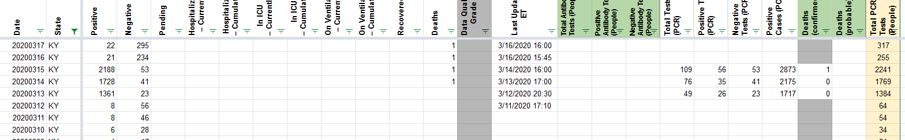
positives column to fix
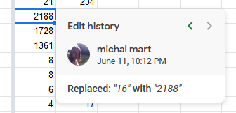 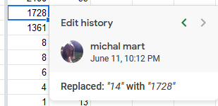 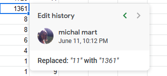
Negatives column to fix 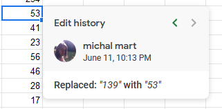 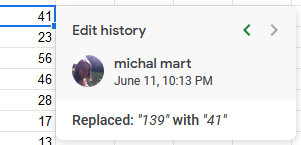 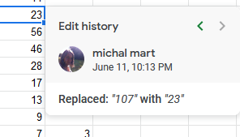
Total Tests (PCR) column to fix 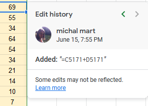
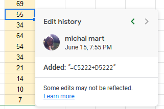
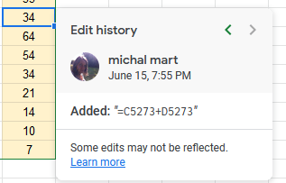
AFTER 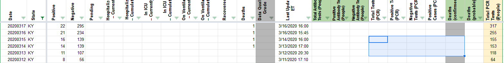
Kansas
BEFORE 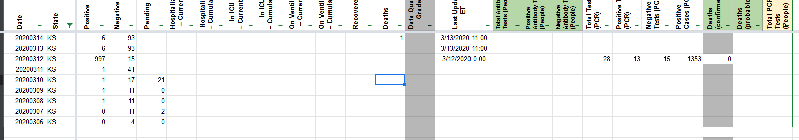
positive to fix 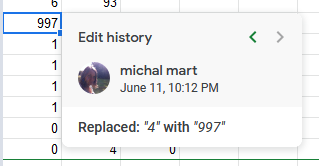 negative to fix 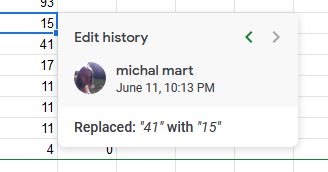
AFTER 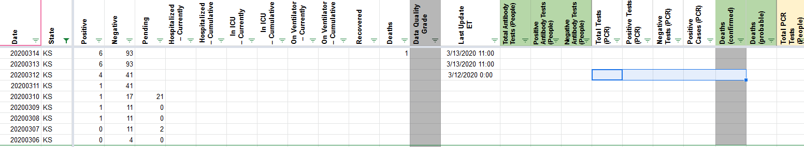
Maryland
BEFORE 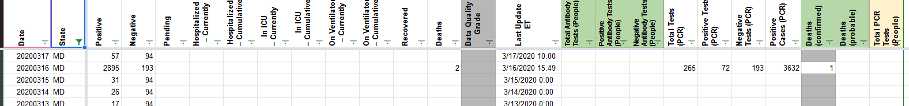
positive to fix 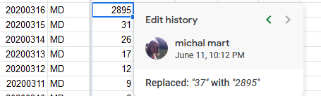 negative to fix 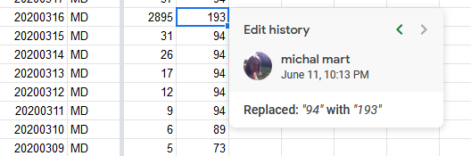
AFTER 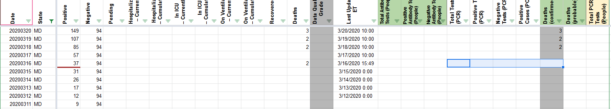
Rhode Island
BEFORE 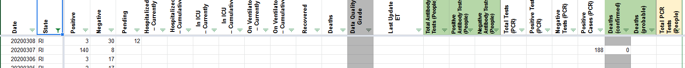
positives 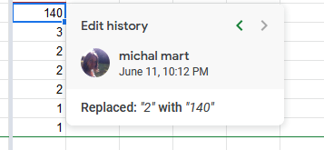
negatives 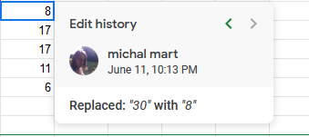
_I also changed 3/7 positives to 3 based on rebma’s download file from RI _ AFTER 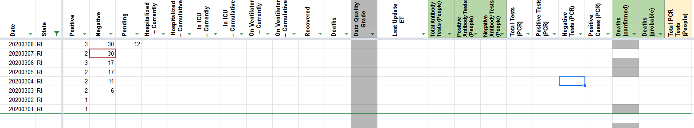
Florida
BEFORE 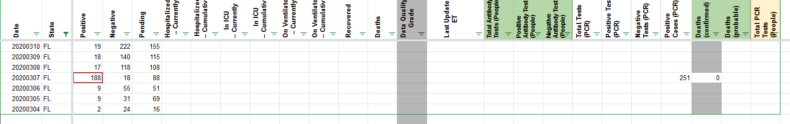
positives 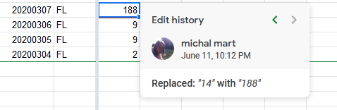 negatives 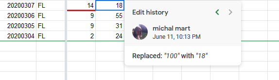
AFTER 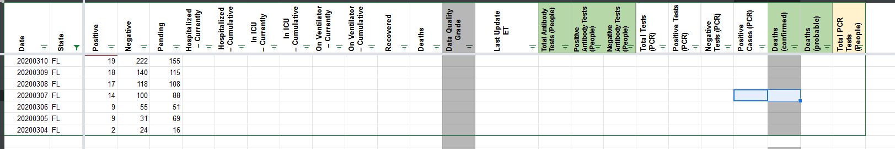
Indiana
BEFORE 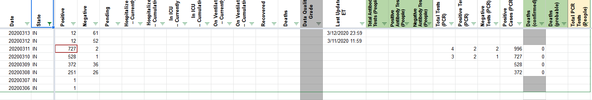 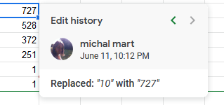 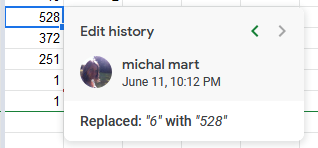 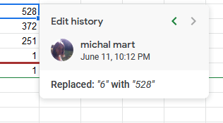 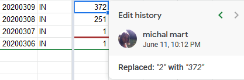 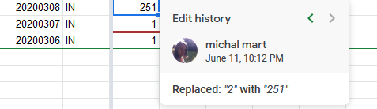 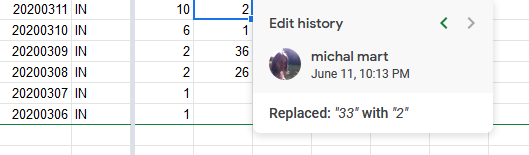 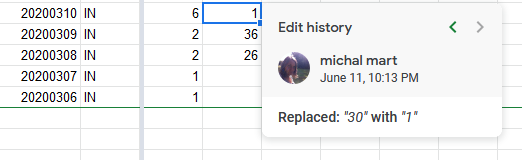 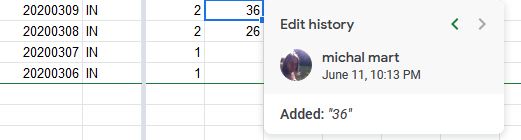 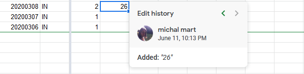
AFTER 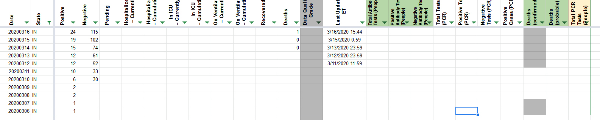
New Hampshire
BEFORE 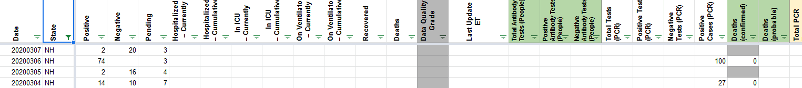
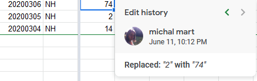 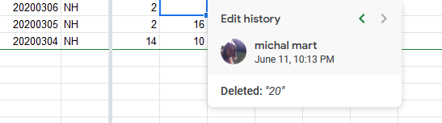 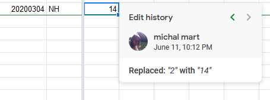
AFTER 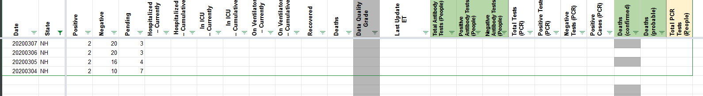
###Oregon BEFORE 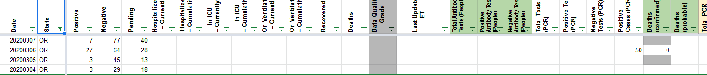
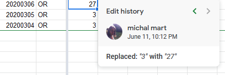
AFTER 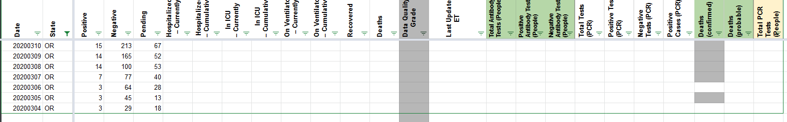
###Iowa BEFORE 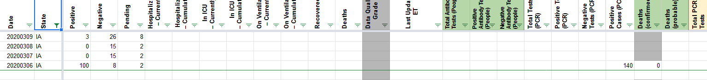
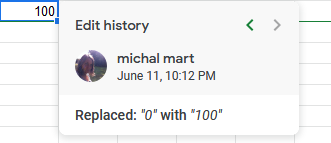 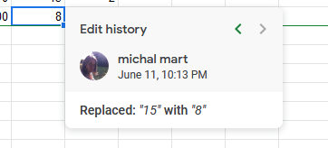
AFTER 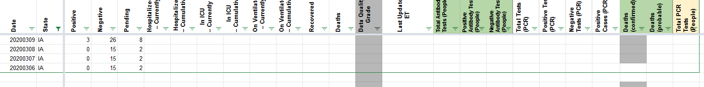